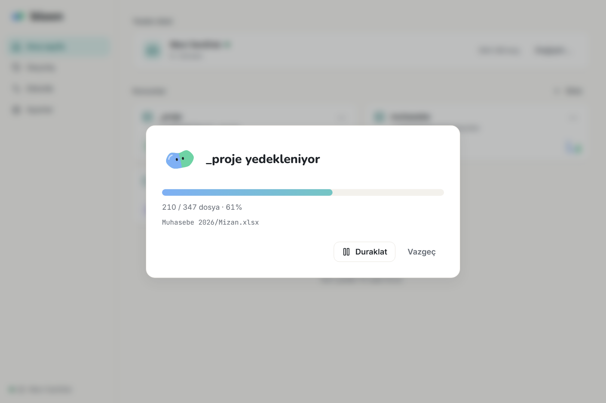
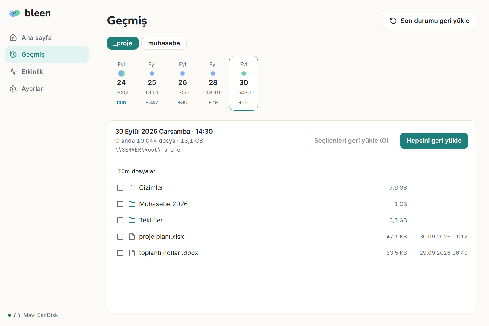

Kolay yedekleme.
Klasörlerini harici bir diske yedekler. İstediğin günün kopyasını geri yükler.
Windows 10/11 · Windows 7/8.1 · macOS · Linux · Tüm sürümler

Özellikler
Kurulum gerektirmez, hesap istemez.
Artımlı yedekleme
İlk yedek tüm dosyaları kopyalar. Sonraki yedekler yalnızca yeni ve değişen dosyaları alır.
Standart ZIP
Yedekler normal ZIP dosyasıdır. bleen olmadan da açılabilir.
Ağ klasörleri
\\SUNUCU\Paylaşım gibi ağ yollarını doğrudan ekleyebilirsin.
Doğrulama
Her dosya SHA-256 ile kontrol edilir. Doğrulanmayan yedek kaydedilmez.
Şifreleme
İsteğe bağlı parola ile yedekleri ve dosya adlarını şifreler.
Arka planda çalışmaz
bleen yalnızca açıkken çalışır. Otomatik yedekleme isteğe bağlıdır.
Nasıl çalışır?
Her yedekleme tek bir ZIP dosyası oluşturur. Değişen dosyaların yalnızca son hali saklanır.
Klasörü ve diski seç
Yedeklenecek klasörü ve yedeklerin kaydedileceği diski seç.
Yedekle
bleen değişiklikleri listeler. Onaylarsın; dosyalar kopyalanır ve doğrulanır.
Geri yükle
Bir tarih seç. Klasörü o günkü haliyle geri yükle ya da tek bir ZIP dosyası olarak kaydet.


Sık sorulan sorular
bleen arka planda çalışır mı?
Hayır. Pencere kapandığında bleen de kapanır. Otomatik yedeklemeyi açarsan Windows, bleen'i günde bir kez çalıştırır.
Yedeklerimi bleen olmadan açabilir miyim?
Evet. En yeni FULL dosyasını boş bir klasöre çıkar. Sonra her INCREMENTAL dosyası için, tarih sırasıyla: önce içindeki DELETED.txt dosyasında yazan dosyaları sil, sonra arşivi aynı klasöre çıkar ve dosyaların üzerine yaz. Tek bir dosya lazımsa onu bulunduğu ZIP dosyasından çıkarman yeterli.
Hangi sistemlerde çalışır?
Windows 10 ve 11, macOS ve Linux. Windows 7 ve 8.1 için ayrı bir sürüm vardır; bu sürüm WebView2 çalışma zamanı gerektirir. macOS ve Linux sürümleri henüz yeni; sorun görürsen bildir.
Parolamı unutursam ne olur?
Şifreli yedekler açılamaz. Parolayı kurtarmanın bir yolu yoktur; güvenli bir yerde sakla.
Ücretli mi?
bleen lisanslı bir yazılımdır ve her bilgisayar için bir lisans gerekir. 30 gün ücretsiz deneyebilirsin. Deneme bitse de lisans olmasa da yedeklerini geri yüklemek her zaman çalışır. bleen internete veri göndermez; lisans da internetsiz etkinleştirilir.